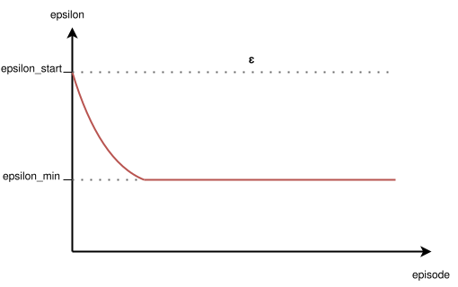
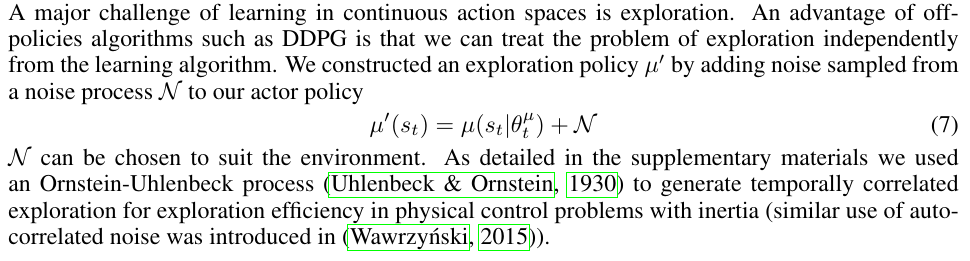
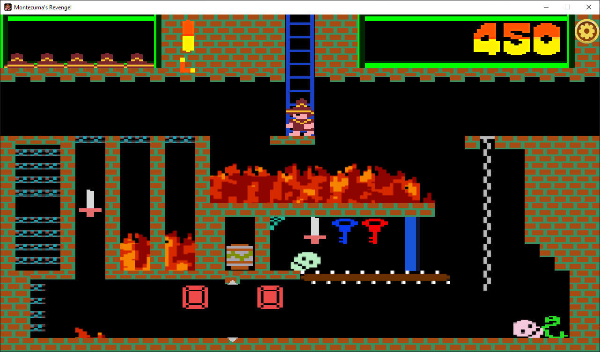
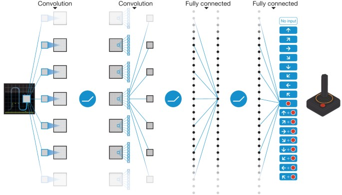
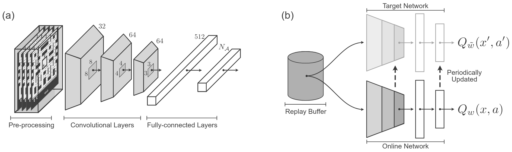
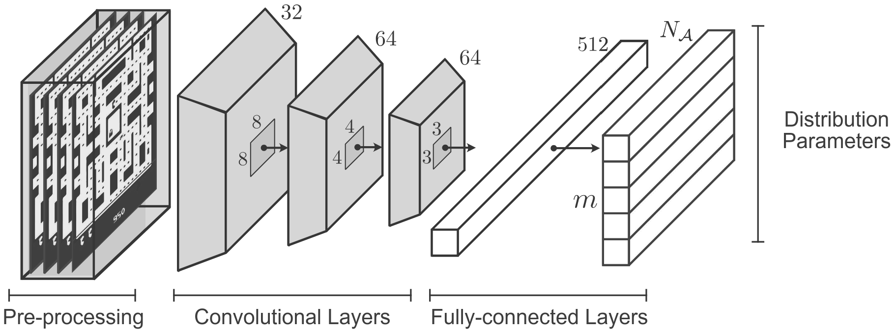

CSC 53439 EP
Lecture 2 - Advanced RL Topics
October 3, 2025
Outline
Part 1
Exploration and Uncertainty
Exploration-Exploitation Dilemma
A core Challenge in Reinforcement Learning

(Image source: UC Berkeley AI course slide, lecture 11.)
- Agent must explore to discover rewarding actions and states.
- Agent must exploit known information to maximize reward.
- Balancing exploration and exploitation is critical for efficient learning.
- Too much exploration: slow progress; too much exploitation: suboptimal policies.
Unstructured Exploration
ε-greedy
- At each step,
- with probability ε, select a random action;
- with probability 1-ε, select the action with the highest estimated value.
- Simple to implement, widely used in discrete action spaces.
- ε is often decayed over time to favor exploitation after initial exploration.
Deep Q-Learning Algorithm
FOR EACH episode$\quad$ $\mathbf{s} \leftarrow \text{env.reset}()$
$\quad$ DO
$\quad\quad$ $\mathbf{a} \leftarrow \color{red}{\epsilon\text{-greedy}(\mathbf{s}, \hat{Q}_{\mathbf{\omega_1}})}$
$\quad\quad$ $r, \mathbf{s'} \leftarrow \text{env.step}(\mathbf{a})$
$\quad\quad$ Store transition $(\mathbf{s}, \mathbf{a}, r, \mathbf{s'})$ in $\mathcal{D}$
$\quad\quad$ If $\mathcal{D}$ contains "enough" transitions
$\quad\quad\quad$ Sample random batch of transitions $(\mathbf{s}_j, \mathbf{a}_j, r_j, \mathbf{s'}_j)$ from $\mathcal{D}$ with $j=1$ to $m$
$\quad\quad\quad$ For each $j$, set $y_j = \begin{cases} r_j & \text{for terminal } \mathbf{s'}_j\\ r_j + \gamma \max_{\mathbf{a}^\star} \hat{Q}_{\mathbf{\omega_{2}}} (\mathbf{s'}_j)_{\mathbf{a}^\star} & \text{for non-terminal } \mathbf{s'}_j \end{cases}$
$\quad\quad\quad$ Perform a gradient descent step on $\left( y_j - \hat{Q}_{\mathbf{\omega_1}}(\mathbf{s}_j)_{\mathbf{a}_j} \right)^2$ with respect to the weights $\mathbf{\omega_1}$
$\quad\quad\quad$ Every $\tau$ steps reset $\hat{Q}_{\mathbf{\omega_2}}$ to $\hat{Q}_{\mathbf{\omega_1}}$, i.e., set $\mathbf{\omega_2} \leftarrow \mathbf{\omega_1}$
$\quad\quad$ $\mathbf{s} \leftarrow \mathbf{s'}$
$\quad$ UNTIL $\mathbf{s}$ is final
RETURN $\mathbf{\omega_1}$

Unstructured Exploration
Gaussian Noise
- Add zero-mean Gaussian noise to the action output by the policy.
- Common in algorithms for continuous control (e.g., DDPG, TD3).
- Noise variance can be annealed to reduce exploration over time.
- Encourages smooth, local exploration around the current policy.
-
Continuous Control With Deep Reinforcement Learning, Lillicrap et al., 2015.
Algorithm: DDPG

Limits of Unstructured Exploration
Case Study: Montezuma's Revenge (Atari)
- Unstructured methods (ε-greedy, Gaussian noise) struggle in environments with sparse rewards and complex exploration requirements.
- Montezuma's Revenge (Atari): classic benchmark for hard exploration.
- Random actions rarely reach rewarding states; agent fails to learn meaningful behavior.
- Motivates the need for intrinsic motivation and structured exploration techniques.

https://www.retrogames.cz/play_124-Atari2600.phpMaximum Entropy RL
Exploration and Robustness via Entropy
- Augments the reward with an entropy term to encourage diverse actions: $$ J(\pi) = \mathbb{E}_{\pi} \left[ \sum_t r_t + \alpha \mathcal{H}(\pi(\cdot|s_t)) \right] $$ where $\mathcal{H}$ is the entropy and $\alpha$ controls the exploration-exploitation tradeoff.
- Promotes stochastic policies, improving robustness and exploration.
- Key algorithms:
- Soft Q-Learning (SQL): incorporates entropy into Q-learning updates.
- Soft Actor-Critic (SAC): off-policy actor-critic with entropy maximization, state-of-the-art for continuous control.
- Widely used in robotics and continuous action domains.
- Equivalence Between Policy Gradients and Soft Q-Learning, Schulman et al., 2017.
- Soft Actor-Critic: Off-Policy Maximum Entropy Deep Reinforcement Learning with a Stochastic Actor, Haarnoja et al., 2018.
Parameter Noise-based Exploration
Noisy Nets, Parameter Space Noise
- Noisy Nets: add trainable noise to network weights (Fortunato et al., 2018). https://arxiv.org/abs/1706.10295
- Parameter Space Noise: perturb policy parameters directly (Plappert et al., 2017).
Intrinsic Reward-based Exploration
- Augment environment reward $r_t$ with an intrinsic reward $r^i_t$: $$r_t \leftarrow r_t + \beta \cdot r^i_t$$
- $\beta$ balances exploitation vs exploration.
- Encourages agent to explore novel or uncertain states.
- Two main approaches:
- Count-based exploration: bonus for visiting rarely seen states.
- Prediction-based exploration: bonus for high prediction error (novelty/surprise).
Intrinsic Reward-based Exploration
Count-based Exploration
- Assigns exploration bonus inversely proportional to state visit count: $$r^i_t = \frac{1}{\sqrt{N(s_t)}}$$
- Effective in small, discrete state spaces.
- Limitations:
- Infeasible in high-dimensional or continuous spaces (counts become sparse or meaningless).
- Alternatives: Density models approximate state visitation counts:
- Bellemare et al., 2016 – CTS-based pseudocounts
- Ostrovski et al., 2017 – PixelCNN-based pseudocounts
- Tang et al., 2017 – Hash-based counts
Intrinsic Reward-based Exploration
Prediction-based Exploration
- Uses prediction error as intrinsic reward: $$r^i_t = \| f(s_t, a_t) - s_{t+1} \|$$ where $f$ is a learned forward dynamics model.
- Agent is rewarded for visiting states where its model is uncertain or inaccurate (novelty/surprise).
- Common in high-dimensional or continuous environments.
- Limitations:
- Model can be "fooled" by stochasticity or noise.
- May focus on unpredictable but irrelevant states.
- Motivates use of random networks (e.g., RND) for more robust novelty estimation.
Intrinsic Reward-based Exploration
Focus on RND
- RND uses two neural networks:
- Target network: randomly initialized, fixed parameters.
- Predictor network: trained to predict the target network's output for each state.
- Intrinsic reward: prediction error (difference between predictor and target outputs).
- States that are novel (rarely visited) yield high prediction error and thus high intrinsic reward.
- As the agent visits a state more often, the predictor learns to match the target, reducing the intrinsic reward.
- Encourages exploration of unfamiliar states.

Intrinsic Reward-based Exploration
Others Key Publications
-
VIME: Variational Information Maximizing Exploration, Houthooft et al., 2016.
Algorithm: VIME -
Unifying Count-Based Exploration and Intrinsic Motivation, Bellemare et al., 2016.
Algorithm: CTS-based Pseudocounts -
Count-Based Exploration with Neural Density Models, Ostrovski et al., 2017.
Algorithm: PixelCNN-based Pseudocounts -
#Exploration: A Study of Count-Based Exploration for Deep Reinforcement Learning, Tang et al., 2016.
Algorithm: Hash-based Counts -
EX2: Exploration with Exemplar Models for Deep Reinforcement Learning, Fu et al., 2017.
Algorithm: EX2 -
Curiosity-driven Exploration by Self-supervised Prediction, Pathak et al., 2017.
Algorithm: Intrinsic Curiosity Module (ICM) -
Large-Scale Study of Curiosity-Driven Learning, Burda et al., 2018.
Contribution: Systematic analysis of surprisal-based intrinsic motivation across environments
Limits of Intrinsic Reward
Motivation for Memory-based Exploration
- Intrinsic reward methods (e.g., novelty, prediction error) encourage exploration by rewarding new or surprising states.
- Key limitations:
- Slow function approximation: Neural networks may lag in updating, so states can appear "novel" longer than they are.
- Non-stationary bonus: What is surprising changes as the agent learns, making the intrinsic reward unstable.
- Knowledge fading: Once a state is no longer novel, the agent may forget its importance, even if it is crucial for solving the task.
- Alternative: Memory-based exploration augments the agent with an explicit memory module to track visited states and contexts.
- This enables more reliable novelty detection, stabilizes exploration signals, and helps retain knowledge of key states.
- Example: Never Give Up (NGU) combines short-term episodic memory with long-term novelty signals (e.g., RND) to avoid forgetting useful states.
Memory-based Exploration
Archive-based / Return-based Exploration
- Go-Explore (Ecoffet et al., 2019): systematic exploration by explicitly archiving and revisiting states. [arXiv] | [Uber AI blog]
- Two phases:
- Exploration: Build an archive of visited states ("cells"), return to promising states, and explore from there.
- Robustification: Learn robust policies to reliably reach and exploit discovered trajectories.
- Highly effective in environments with sparse rewards (e.g., Montezuma's Revenge).
- Distinct from intrinsic reward or parameter noise approaches: relies on explicit state memory and systematic return.
Video
Further Reading
- Exploration Strategies in Deep Reinforcement Learning , Lilian Weng, 2020.
Comprehensive blog post covering a wide range of exploration techniques, theoretical motivations, and practical considerations in deep RL.
Part 2
Distributional RL
Categorical DQN (C51)
Introduction & Motivation
- Classic DQN: learns only the expectation \(Q(s,a)=\mathbb{E}[R \mid s,a]\).
- Lost information: variance, skewness, tail (risk) structure.
- Distributional RL: model full return random variable \(Z(s,a)\) (not just its mean).
- Distributional Bellman: \(\mathcal{T} Z(s,a) \stackrel{D}{=} R(s,a) + \gamma Z(S', A')\).
- Implementation (C51): project updated distribution onto fixed atoms \(\{z_i\}_{i=0}^{50}\).
- Benefits: richer training signal, more stable gradients, enables risk-sensitive objectives (e.g. CVaR).
- Key idea: preserve probabilistic structure throughout the backup, then take \(\mathbb{E}[Z]\) only for action selection.
DQN Recap
Value-based Baseline

- Goal: approximate \( Q(s,a) = \mathbb{E}\left[\sum_{t} \gamma^t r_t \mid s,a\right] \)
- Network: input is state, output is vector \( Q(s,a) \) for all actions
- Bellman backup (target): \( y = r + \gamma \max_{a'} Q(s',a') \)
- Loss: mean squared error \( (y - Q(s,a))^2 \)
- Limitation: collapses all uncertainty into a single scalar value
Distributional RL
Key Idea
- Random return: \( Z(s,a) \) is a random variable over \( \mathbb{R} \)
- Distributional Bellman: \( \mathcal{T} Z(s,a) \stackrel{D}{=} r + \gamma Z(S', A') \), i.e., the law is transformed
- Goal: approximate the law of \( Z(s,a) \) (not just \( \mathbb{E}[Z] \))
- Expectation recoverable: \( Q(s,a) = \mathbb{E}[Z(s,a)] \)
C51
Categorical Approximation
- Fixed discrete support: \( \{z_i\}_{i=0}^{N-1} \), with \( N = 51 \)
- Bounded interval: \( [V_{\min}, V_{\max}] \)
- \( \Delta z = \frac{V_{\max} - V_{\min}}{N-1} \)
- Network predicts logits \( \to \) softmax \( \to \) \( p_i(s,a) \)
- Approximate distribution: \( \mathbb{P}(Z(s,a) = z_i) = p_i \)
C51
Bellman Update & Projection
- Backup distribution: \( r + \gamma z_i \) (or \( r \) if terminal)
- Clip to interval \([V_{\min}, V_{\max}]\)
- Redistribute probability mass by linear interpolation to neighboring atoms
- Projection operator \(\Phi\): maps shifted/scaled distribution onto fixed support
- Approximately preserves expectation, stabilizes learning
C51
Loss Function
- Target: \( m' = \Phi \left( r + \gamma Z_{\theta^-}(s', a^*) \right) \)
- Loss: \( \mathrm{CE}(m', p_\theta) = - \sum_{i} m'_i \log p_\theta(z_i \mid s, a) \)
- Comparison: DQN uses MSE on a scalar value
- Advantage: Multi-bin signal → more informative gradients
- Empirical result: Improved stability on Atari benchmarks
C51
Architecture


- Backbone identical to DQN: convolutional layers followed by fully connected layers.
- Output: $(\#\text{actions} \times N)$ logits, reshaped to $(\#\text{actions}, N)$.
- Softmax over atoms for each action: $p_i(s,a)$.
- Action selection: $a^* = \arg\max_a \sum_i p_i(s,a) z_i$.
- Target: uses frozen (target) network and projection onto fixed support.
C51
Atari Results (Summary)
- Improved median score compared to vanilla DQN
- Faster convergence in the first millions of frames
- Reduced training variance
- Foundation for Rainbow (integration of further improvements)
C51
Limitations & Extensions
- Fixed support: risk of saturation if returns fall outside $[V_{\min}, V_{\max}]$
- Uniform resolution: inefficient for modeling sharp tails or skewed distributions
- Extensions:
- QR-DQN: learns quantiles, reducing projection bias
- IQN: continuous implicit quantile function for flexible modeling
- FQF: learnable fraction proposal for adaptive quantile allocation
- Paradigm: working with distributions enables risk-sensitive and utility-based RL
C51
Conclusion & Discussion
- Moving from expectation to distribution provides a richer learning signal.
- C51 is simple, effective, and forms the basis for many improvements.
- Actions are selected via the expectation: the full distribution is valuable for training and for future risk-sensitive objectives.
- Enables risk-sensitive RL, robustness, and informed exploration.
- Open questions: how to choose the support? How to combine with epistemic uncertainty?
Probability-based Algorithms
C51, Categorical DQN
Input:
$\quad\quad$ none
Algorithm parameters:
$\quad\quad$ $\gamma \text{ (discount factor)}$
$\quad\quad$ $\alpha \in (0,1] \text{ (learning rate)}$
$\quad\quad$ $\epsilon > 0 \text{ (exploration)}$
$\quad\quad$ $M \text{ (replay memory capacity)}$
$\quad\quad$ $m \text{ (batch size)}$
$\quad\quad$ $C \text{ (target update period)}$
$\quad\quad$ $\textcolor{red}{\text{number of atoms } N}$
$\quad\quad$ $\textcolor{red}{\text{value range } [V_{\min}, V_{\max}]}$
$\quad\quad$ $\textcolor{red}{\text{fixed support } z_i = V_{\min} + i \Delta z,\; i=0,\dots,N-1,\; \Delta z = \tfrac{V_{\max}-V_{\min}}{N-1}}$
Initialize replay memory $\mathcal{D}$ to capacity $M$
Initialize $\textcolor{red}{\text{distribution network } \hat{Z}_{\omega_1}}$ with random weights $\omega_1$
Initialize $\textcolor{red}{\text{target distribution network } \hat{Z}_{\omega_2}}$ with $\omega_2 \leftarrow \omega_1$
FOR EACH episode
$\quad s \leftarrow \text{env.reset}()$
$\quad$ DO
$\quad\quad a \leftarrow \epsilon\text{-greedy}(s, \hat{Z}_{\omega_1})$ $\textcolor{red}{\text{(choose action maximizing } \mathbb{E}[Z_{\omega_1}(s,a)]\text{)}}$
$\quad\quad r, s' \leftarrow \text{env.step}(a)$
$\quad\quad$ Store $(s,a,r,s')$ in $\mathcal{D}$
$\quad\quad$ If $\mathcal{D}$ contains at least $m$ transitions:
$\quad\quad\quad$ Sample $(s_j,a_j,r_j,s'_j),\; j=1..m$
$\quad\quad\quad$ For each $j$:
$\textcolor{red}{\text{If $s'_j$ terminal: } Tz = \min(V_{\max}, \max(V_{\min}, r_j))}$
$\textcolor{red}{\text{Else: } Tz_i = \min(V_{\max}, \max(V_{\min}, r_j + \gamma z_i)),\; i=0..N-1}$
$\textcolor{red}{a^\star = \arg\max_a \sum_i z_i \, p_{\omega_2}(z_i \mid s'_j, a)}$
$\textcolor{red}{m^{(j)} \leftarrow \Phi_{s'_j,a^\star}[r_j, \gamma, p_{\omega_2}]}$
$\textcolor{red}{L = -\sum_{i=0}^{N-1} m^{(j)}_i \log p_{\omega_1}(z_i \mid s_j, a_j)}$
$\quad\quad\quad$ Update $\omega_1$ by gradient descent on $L$
$\quad\quad\quad$ Every $C$ steps: $\omega_2 \leftarrow \omega_1$
$\quad\quad s \leftarrow s'$
$\quad$ UNTIL $s$ terminal
RETURN $\textcolor{red}{Z_{\omega_1}} \quad \text{(the learned distributional action-value function)}$
$\quad\quad$ none
Algorithm parameters:
$\quad\quad$ $\gamma \text{ (discount factor)}$
$\quad\quad$ $\alpha \in (0,1] \text{ (learning rate)}$
$\quad\quad$ $\epsilon > 0 \text{ (exploration)}$
$\quad\quad$ $M \text{ (replay memory capacity)}$
$\quad\quad$ $m \text{ (batch size)}$
$\quad\quad$ $C \text{ (target update period)}$
$\quad\quad$ $\textcolor{red}{\text{number of atoms } N}$
$\quad\quad$ $\textcolor{red}{\text{value range } [V_{\min}, V_{\max}]}$
$\quad\quad$ $\textcolor{red}{\text{fixed support } z_i = V_{\min} + i \Delta z,\; i=0,\dots,N-1,\; \Delta z = \tfrac{V_{\max}-V_{\min}}{N-1}}$
Initialize replay memory $\mathcal{D}$ to capacity $M$
Initialize $\textcolor{red}{\text{distribution network } \hat{Z}_{\omega_1}}$ with random weights $\omega_1$
Initialize $\textcolor{red}{\text{target distribution network } \hat{Z}_{\omega_2}}$ with $\omega_2 \leftarrow \omega_1$
FOR EACH episode
$\quad s \leftarrow \text{env.reset}()$
$\quad$ DO
$\quad\quad a \leftarrow \epsilon\text{-greedy}(s, \hat{Z}_{\omega_1})$ $\textcolor{red}{\text{(choose action maximizing } \mathbb{E}[Z_{\omega_1}(s,a)]\text{)}}$
$\quad\quad r, s' \leftarrow \text{env.step}(a)$
$\quad\quad$ Store $(s,a,r,s')$ in $\mathcal{D}$
$\quad\quad$ If $\mathcal{D}$ contains at least $m$ transitions:
$\quad\quad\quad$ Sample $(s_j,a_j,r_j,s'_j),\; j=1..m$
$\quad\quad\quad$ For each $j$:
$\textcolor{red}{\text{If $s'_j$ terminal: } Tz = \min(V_{\max}, \max(V_{\min}, r_j))}$
$\textcolor{red}{\text{Else: } Tz_i = \min(V_{\max}, \max(V_{\min}, r_j + \gamma z_i)),\; i=0..N-1}$
$\textcolor{red}{a^\star = \arg\max_a \sum_i z_i \, p_{\omega_2}(z_i \mid s'_j, a)}$
$\textcolor{red}{m^{(j)} \leftarrow \Phi_{s'_j,a^\star}[r_j, \gamma, p_{\omega_2}]}$
$\textcolor{red}{L = -\sum_{i=0}^{N-1} m^{(j)}_i \log p_{\omega_1}(z_i \mid s_j, a_j)}$
$\quad\quad\quad$ Update $\omega_1$ by gradient descent on $L$
$\quad\quad\quad$ Every $C$ steps: $\omega_2 \leftarrow \omega_1$
$\quad\quad s \leftarrow s'$
$\quad$ UNTIL $s$ terminal
RETURN $\textcolor{red}{Z_{\omega_1}} \quad \text{(the learned distributional action-value function)}$
Probability-based Algorithms
C51, Categorical DQN
Input:
$\quad\quad$ none
Algorithm parameters:
$\quad\quad$ discount factor $\gamma$
$\quad\quad$ learning rate $\alpha \in (0,1]$
$\quad\quad$ small $\epsilon > 0$
$\quad\quad$ capacity of the replay memory $M$
$\quad\quad$ batch size $m$
$\quad\quad$ target network update period $C$
$\quad\quad$ number of atoms $N$
$\quad\quad$ value range $[V_{\min}, V_{\max}]$
$\quad\quad$ fixed support $z_i = V_{\min} + i \Delta z,\; i=0,\dots,N-1$ with $\Delta z = \frac{V_{\max}-V_{\min}}{N-1}$
Initialize replay memory $\mathcal{D}$ to capacity $M$
Initialize action-value distribution network $\hat{Z}_{\mathbf{\omega_1}}$ with random weights $\mathbf{\omega_1}$
Initialize target distribution network $\hat{Z}_{\mathbf{\omega_2}}$ with weights $\mathbf{\omega_2} \leftarrow \mathbf{\omega_1}$
FOR EACH episode
$\quad$ $\mathbf{s} \leftarrow \text{env.reset}()$
$\quad$ DO
$\quad\quad$ $\mathbf{a} \leftarrow \epsilon\text{-greedy}(\mathbf{s}, \hat{Z}_{\mathbf{\omega_1}})$ $\quad$ // choose action by maximizing $\mathbb{E}[Z_{\omega_1}(s,a)]$
$\quad\quad$ $r, \mathbf{s'} \leftarrow \text{env.step}(\mathbf{a})$
$\quad\quad$ Store transition $(\mathbf{s}, \mathbf{a}, r, \mathbf{s'})$ in $\mathcal{D}$
$\quad\quad$ If $\mathcal{D}$ contains at least $m$ transitions
$\quad\quad\quad$ Sample random batch $(\mathbf{s}_j, \mathbf{a}_j, r_j, \mathbf{s'}_j)$ with $j=1$ to $m$
$\quad\quad\quad$ For each $j$:
$\quad\quad\quad\quad$ If $\mathbf{s'}_j$ is terminal: set $Tz = \min\big(V_{\max}, \max(V_{\min}, r_j)\big)$
$\quad\quad\quad\quad$ Else: $Tz_i = \min\big(V_{\max}, \max(V_{\min}, r_j + \gamma z_i)\big),\;\; i=0,\dots,N-1$
$\quad\quad\quad\quad$ Compute greedy action $\mathbf{a}^\star = \arg\max_{\mathbf{a}} \sum_i z_i \cdot p_{\omega_2}(z_i \mid \mathbf{s'}_j, \mathbf{a})$
$\quad\quad\quad\quad$ Construct target distribution by **projecting** shifted support $\{Tz_i\}$ onto fixed atoms $\{z_i\}$: $\quad\quad\quad\quad\quad$ $m^{(j)} \leftarrow \Phi_{\mathbf{s'}_j,\mathbf{a}^\star}[r_j, \gamma, p_{\omega_2}]$
$\quad\quad\quad$ Perform a gradient descent step to minimize the cross-entropy: $\quad\quad\quad\quad$ $L = -\sum_{i=0}^{N-1} m^{(j)}_i \log p_{\omega_1}(z_i \mid \mathbf{s}_j, \mathbf{a}_j)$
$\quad\quad\quad$ Every $C$ steps, update target: $\mathbf{\omega_2} \leftarrow \mathbf{\omega_1}$
$\quad\quad$ $\mathbf{s} \leftarrow \mathbf{s'}$
$\quad$ UNTIL $\mathbf{s}$ is terminal
RETURN $\mathbf{\omega_1}$ (i.e., the learned distributional action-value function $Z_{\omega_1}$)
$\quad\quad$ none
Algorithm parameters:
$\quad\quad$ discount factor $\gamma$
$\quad\quad$ learning rate $\alpha \in (0,1]$
$\quad\quad$ small $\epsilon > 0$
$\quad\quad$ capacity of the replay memory $M$
$\quad\quad$ batch size $m$
$\quad\quad$ target network update period $C$
$\quad\quad$ number of atoms $N$
$\quad\quad$ value range $[V_{\min}, V_{\max}]$
$\quad\quad$ fixed support $z_i = V_{\min} + i \Delta z,\; i=0,\dots,N-1$ with $\Delta z = \frac{V_{\max}-V_{\min}}{N-1}$
Initialize replay memory $\mathcal{D}$ to capacity $M$
Initialize action-value distribution network $\hat{Z}_{\mathbf{\omega_1}}$ with random weights $\mathbf{\omega_1}$
Initialize target distribution network $\hat{Z}_{\mathbf{\omega_2}}$ with weights $\mathbf{\omega_2} \leftarrow \mathbf{\omega_1}$
FOR EACH episode
$\quad$ $\mathbf{s} \leftarrow \text{env.reset}()$
$\quad$ DO
$\quad\quad$ $\mathbf{a} \leftarrow \epsilon\text{-greedy}(\mathbf{s}, \hat{Z}_{\mathbf{\omega_1}})$ $\quad$ // choose action by maximizing $\mathbb{E}[Z_{\omega_1}(s,a)]$
$\quad\quad$ $r, \mathbf{s'} \leftarrow \text{env.step}(\mathbf{a})$
$\quad\quad$ Store transition $(\mathbf{s}, \mathbf{a}, r, \mathbf{s'})$ in $\mathcal{D}$
$\quad\quad$ If $\mathcal{D}$ contains at least $m$ transitions
$\quad\quad\quad$ Sample random batch $(\mathbf{s}_j, \mathbf{a}_j, r_j, \mathbf{s'}_j)$ with $j=1$ to $m$
$\quad\quad\quad$ For each $j$:
$\quad\quad\quad\quad$ If $\mathbf{s'}_j$ is terminal: set $Tz = \min\big(V_{\max}, \max(V_{\min}, r_j)\big)$
$\quad\quad\quad\quad$ Else: $Tz_i = \min\big(V_{\max}, \max(V_{\min}, r_j + \gamma z_i)\big),\;\; i=0,\dots,N-1$
$\quad\quad\quad\quad$ Compute greedy action $\mathbf{a}^\star = \arg\max_{\mathbf{a}} \sum_i z_i \cdot p_{\omega_2}(z_i \mid \mathbf{s'}_j, \mathbf{a})$
$\quad\quad\quad\quad$ Construct target distribution by **projecting** shifted support $\{Tz_i\}$ onto fixed atoms $\{z_i\}$: $\quad\quad\quad\quad\quad$ $m^{(j)} \leftarrow \Phi_{\mathbf{s'}_j,\mathbf{a}^\star}[r_j, \gamma, p_{\omega_2}]$
$\quad\quad\quad$ Perform a gradient descent step to minimize the cross-entropy: $\quad\quad\quad\quad$ $L = -\sum_{i=0}^{N-1} m^{(j)}_i \log p_{\omega_1}(z_i \mid \mathbf{s}_j, \mathbf{a}_j)$
$\quad\quad\quad$ Every $C$ steps, update target: $\mathbf{\omega_2} \leftarrow \mathbf{\omega_1}$
$\quad\quad$ $\mathbf{s} \leftarrow \mathbf{s'}$
$\quad$ UNTIL $\mathbf{s}$ is terminal
RETURN $\mathbf{\omega_1}$ (i.e., the learned distributional action-value function $Z_{\omega_1}$)
QR-DQN
Quantile Regression Deep Q-Network
- Represents the value distribution by estimating a fixed set of quantiles.
- Uses quantile regression loss to train the network.
- Improves stability and expressiveness over categorical methods.
-
Distributional Reinforcement Learning with Quantile Regression, Dabney et al., 2017.
Algorithm: QR-DQN
Extensions
QR with Utility, Risk-sensitive RL
- Integrate utility functions into quantile-based RL for risk-sensitive objectives.
- Customize agent behavior: risk-averse, risk-seeking, or robust policies.
- Applications in finance, robotics, and safety-critical domains.
Further Reading
Bellemare, M. G., Dabney, W., & Rowland, M. (2023). Distributional Reinforcement Learning. MIT Press.
Freely available as an open-access PDF from MIT Press.

Part 4
Distributed RL / Scaling RL
A3C
Asynchronous Advantage Actor-Critic
- Multiple agents run in parallel, each with its own environment copy.
- Asynchronous updates to shared parameters.
- Improves exploration and training speed.
Ape-X
Distributed Prioritized Experience Replay
- Many actors generate experience in parallel.
- Centralized learner updates the policy using prioritized replay.
- Scalable to large clusters, efficient data collection.
IMPALA
Importance Weighted Actor-Learner Architecture
- Many actors send trajectories to a central learner.
- Uses V-trace for off-policy correction.
- Highly scalable, supports thousands of actors.
R2D2
Recurrent Experience Replay in Distributed RL
- Distributed experience replay with recurrent networks (LSTM).
- Handles partial observability and long-term dependencies.
- Combines scalability with memory-based policies.
Distributed RL
Key Publications
-
Accelerated Methods for Deep Reinforcement Learning, Stooke and Abbeel, 2018.
Contribution: Systematic analysis of parallelization in deep RL across algorithms. -
IMPALA: Scalable Distributed Deep-RL with Importance Weighted Actor-Learner Architectures, Espeholt et al., 2018.
Algorithm: IMPALA -
Distributed Prioritized Experience Replay, Horgan et al., 2018.
Algorithm: Ape-X -
Recurrent Experience Replay in Distributed Reinforcement Learning, Anonymous, 2018.
Algorithm: R2D2 -
RLlib: Abstractions for Distributed Reinforcement Learning, Liang et al., 2017.
Contribution: A scalable library of RL algorithm implementations. Documentation link
Part 5
Hierarchical RL
Options Framework
Temporal Abstraction in RL
- Options: temporally extended actions (sub-policies).
- Each option has its own policy, initiation set, and termination condition.
- Enables multi-level decision making.
Options-Critic
Learning Options End-to-End
- Jointly learns option policies, termination, and selection.
- Removes need for hand-designed options.
- Enables automatic discovery of useful temporal abstractions.
Hierarchical Actor-Critic
Multi-Level Policy Learning
- Stacked actor-critic modules at different abstraction levels.
- Higher-level policies select goals or sub-policies for lower levels.
- Improves exploration and sample efficiency.
MaxQ Value Function Decomposition
Hierarchical Value Learning
- Decomposes value function into sub-task value functions.
- Facilitates reuse and transfer of learned skills.
- Enables modular and interpretable RL solutions.
Hierarchical RL
Key Publications
-
Strategic Attentive Writer for Learning Macro-Actions, Vezhnevets et al., 2016.
Algorithm: STRAW -
FeUdal Networks for Hierarchical Reinforcement Learning, Vezhnevets et al., 2017.
Algorithm: Feudal Networks -
Data-Efficient Hierarchical Reinforcement Learning, Nachum et al., 2018.
Algorithm: HIRO
Part 6
Meta-learning and Transfer
Knowledge Transfer
Transferring Skills Across Tasks
- Reuse knowledge from previous tasks to accelerate learning.
- Methods: policy transfer, value transfer, feature reuse.
- Reduces sample complexity in new environments.
Pretraining
Leveraging Prior Experience
- Train on large datasets or simpler tasks before target task.
- Improves initial performance and convergence speed.
- Common in robotics, vision, and language RL.
Model-Agnostic Meta-Learning (MAML)
Learning to Learn
- Meta-learns an initialization for fast adaptation to new tasks.
- Few-shot learning: adapts with minimal data.
- Applicable to policy gradients and value-based RL.
Transfer and Multitask RL
Key Publications
-
Progressive Neural Networks, Rusu et al., 2016.
Algorithm: Progressive Networks -
Universal Value Function Approximators, Schaul et al., 2015.
Algorithm: UVFA -
Reinforcement Learning with Unsupervised Auxiliary Tasks, Jaderberg et al., 2016.
Algorithm: UNREAL -
The Intentional Unintentional Agent: Learning to Solve Many Continuous Control Tasks Simultaneously, Cabi et al., 2017.
Algorithm: IU Agent -
PathNet: Evolution Channels Gradient Descent in Super Neural Networks, Fernando et al., 2017.
Algorithm: PathNet -
Mutual Alignment Transfer Learning, Wulfmeier et al., 2017.
Algorithm: MATL - Learning an Embedding Space for Transferable Robot Skills, Hausman et al., 2018.
-
Hindsight Experience Replay, Andrychowicz et al., 2017.
Algorithm: Hindsight Experience Replay (HER)
Meta-RL
Key Publications
-
RL2: Fast Reinforcement Learning via Slow Reinforcement Learning, Duan et al., 2016.
Algorithm: RL2 - Learning to Reinforcement Learn, Wang et al., 2016.
-
Model-Agnostic Meta-Learning for Fast Adaptation of Deep Networks, Finn et al., 2017.
Algorithm: MAML -
A Simple Neural Attentive Meta-Learner, Mishra et al., 2018.
Algorithm: SNAIL